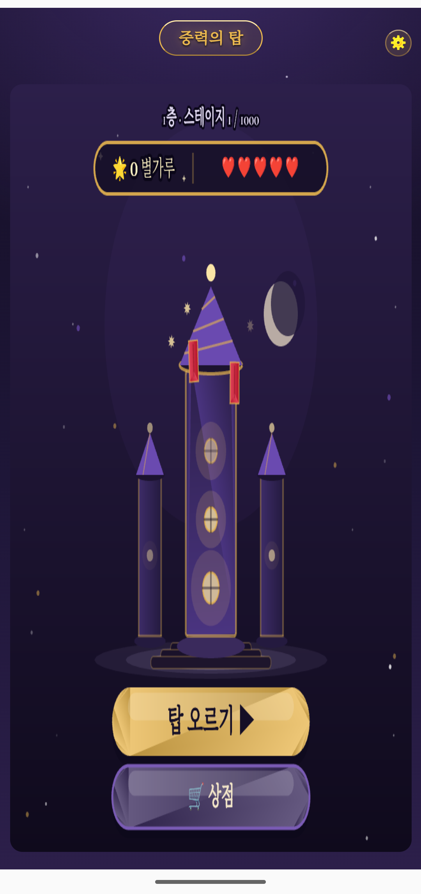

재료를 밀어 맞추는 손맛 좋은 매치-3에 중력 반전이라는 변수를 더했습니다. 6수마다 중력이 뒤집히며 보드가 다시 쏟아지는 1000개의 스테이지를 올라 보세요.

단순히 맞추는 게임이 아니라, 매 순간 판을 다시 읽어야 하는 퍼즐입니다.
6수마다 중력이 뒤집혀 재료가 반대 방향으로 쏟아집니다. 안정됐다 싶은 순간, 판이 다시 흔들려요.
가로·세로 줄 클리어, 십자 폭탄, 컬러 폭탄까지. 상점에서 별가루로 구매하거나 탑 안의 사건에서 얻을 수 있어요.
스테이지를 클리어하면 별가루를 얻습니다. 이동 수를 늘리거나 특수 재료를 사는 데 사용하세요.
도전마다 하트 하나를 사용합니다. 시간이 지나면 자동으로 차오르고, 급하면 보충할 방법도 있어요.
층을 오르는 동안, 저마다 다른 사연을 가진 이들이 말을 걸어옵니다.
탑의 오래된 기록을 지키는 사서. 차분한 조언을 건넵니다.
장난기 많은 불빛. 함정을 알려줄지 모른 척할지는 기분에 달렸어요.
규칙을 지키는 엄격한 수문장. 방심하는 순간을 놓치지 않습니다.
구석구석을 뛰어다니는 작은 요정. 사소한 것에도 눈을 반짝입니다.
당신과 비슷한 처지의 동료 모험가. 서로 의지하며 함께 올라갑니다.
이웃한 재료를 원하는 방향으로 밀어 3개 이상 줄을 맞추면 사라집니다.
4개 이상 한 번에 맞추면 줄 클리어, 십자 폭탄, 컬러 폭탄 같은 특수 재료가 탄생해요.
6수마다 중력이 뒤집히며 보드 전체가 반대 방향으로 다시 쏟아집니다.
정해진 이동 수 안에 목표 점수를 넘기면 다음 층으로 올라갑니다.
디자인과 밸런스를 가다듬는 중이에요. 출시 소식은 추후 이 페이지를 통해 안내드릴게요.